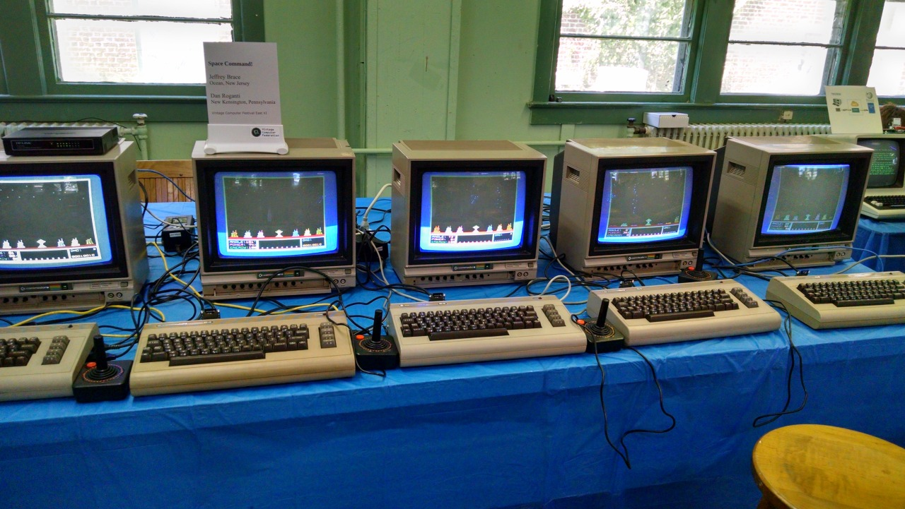

Jeff Brace & Dan Roganti (the artist behind all the VCF East shirts I own) set up eight networked Commodore 64′s to play a single, massive game of Space Command! Each C64 is running Space Command! by way of a C64NIC+ cart, talking to a central server: another C64 with SuperCPU helping it along. Amazing that these machines are all playing together. If I were better at Missile Command (which Space Command! is modeled after) and time permitted, I would probably have sat down for a game.